Introduction
TriplyDB allows you to store, publish, and use linked data Knowledge Graphs. TriplyDB makes it easy to upload linked data and expose it through various APIs (SPARQL, Elasticsearch, LDF, REST). Read More
Uploading Data
This section explains how to create a linked dataset in TriplyDB.
Creating a new dataset
The following steps allow a new linked datasets to be created:
-
Log into a TriplyDB instance.
-
Click the
+button on the dataset pane that appears on the right-hand side of the home screen. -
This brings up the dialog for creating a new dataset. Enter a dataset name that consists of alpha-numeric characters (
A-Za-z0-9) and hyphens (-). -
Optionally, enter a dataset display name. This name will be used in the GUI and will be exposed in dataset metadata.
-
Optionally, enter a dataset description. You can use rich text formatting by using Markdown. See our section about Markdown for details.
-
Optionally, change the access level for the dataset. By default this is set to “Private”. See dataset access levels for more information.
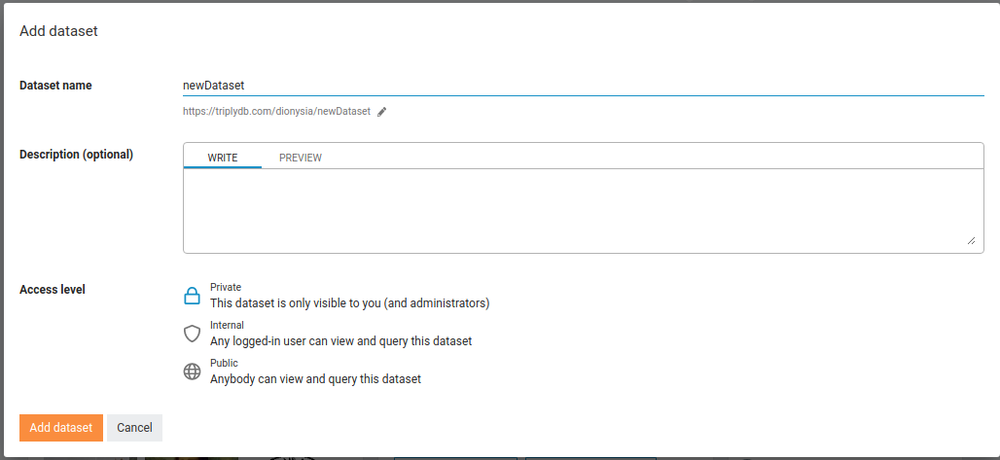
When datasets are Public (see Access Levels), they automatically expose metadata and are automatically crawled and indexed by popular search engines (see Metadata).
Adding data
Once the dataset is created, the “Add data” view is displayed (see screenshot). In this view data can be added in three ways:
- File upload
- Select files from your local machine. It is also possible to drag-and-drop local files on the cloud icon with the upward pointing arrow.
- URL upload
- Copy/paste a URL that points to an online RDF file.
- Import
- Import a dataset that is already published in the same TriplyDB instance.
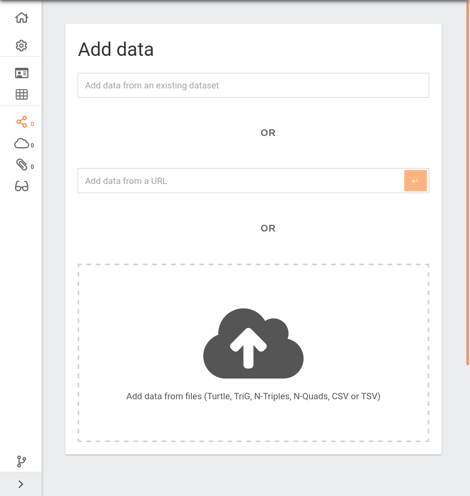
The “Add data” view is also available for existing datasets:
-
Go to the “Graphs” view by clicking on the graph icon in the left-hand sidebar.
-
Click the “Import a new graph” button.
Adding data: File upload
The file upload feature allows you to upload RDF files from your local machine. This can be done in either of two ways:
-
Click on the cloud icons to open a dialog that allows local RDF files from your machine to be selected.
-
Drag-and-drop RDF files from your local machine onto the cloud icon.
The following RDF serialization formats are currently supported:
| Serialization Format | File extension |
|---|---|
| N-Quads | .nq |
| N-Triples | .nt |
| RDF/XML | .rdf, .owl, .owx |
| TriG | .trig |
| Turtle | .ttl, .n3 |
| JSON-LD | .jsonld, .json |
Up to 1,000 separate files can be uploaded in one go. It is also possible to upload compressed files and archives. When the number of files exceeds 1,000, it is more efficient to combine them in archives and upload those. This allows an arbitrary number of files to be uploaded. The following archive/compression formats are currently supported:
| Format | File extensions |
|---|---|
| gzip | .gz |
| bzip2 | .bz2 |
| tar | tar |
| XZ | .xz |
| ZIP | .zip |
Adding data by URL upload
The second option for adding data is to include it from an online URL location. This is done by entering the URL inside the “Add data from a URL” text field.
Adding data by import
The third option for adding data is to import from datasets that are published in the same TriplyDB instance. This is done with the “Add data from an existing dataset” dropdown list (see screenshot).
Adding malformed data
TriplyDB only allows valid RDF data to be added. If data is malformed, TriplyDB will show an error message that indicates which part of the RDF data is malformed (see screenshot). If such malformed data is encountered, the RDF file must first be corrected and uploaded again.
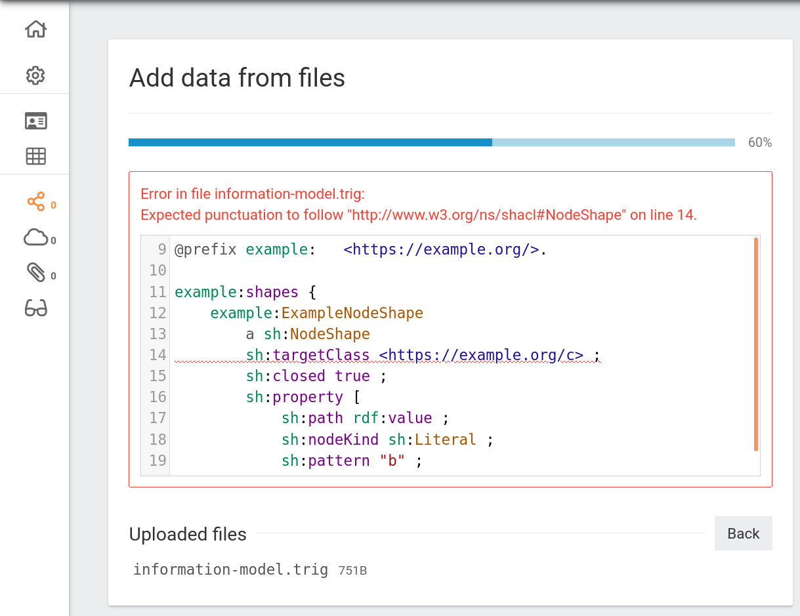
TriplyDB follows the linked data standards strictly. Many triple stores allow incorrect RDF data to be added. This may seem convenient during the loading phase, but often results in errors when standards-compliant tools start using the data.
Assets: binary data
Not all data can be stored as RDF data. For example images and video files use a binary format. Such files can also be stored in TriplyDB and can be integrated into the Knowledge Graph.
Publishing data
With TriplyDB you can easily make your data available to the outside world.
Publishing your dataset
You can publish your dataset by setting the visibility to “Public” in the dataset settings menu. Making a dataset public in TriplyDB has the following consequences:
- The dataset can be searched for and visited by anybody on the web.
- The dataset will be indexed by web search engines such as Google Dataset Search.
- Any services that are started for that dataset will be available to anybody on the web. This includes SPARQL, text search, and linked data Fragments.
Entering metadata
Adding metadata to your datasets is important. This makes it easier to find your dataset later and also allows search engines and social media applications to understand your dataset.
Metadata is entered from the dataset settings page, which is accessed by clicking on the “Dataset settings” (cog icon) option from the left-hand sidebar (see screenshot).
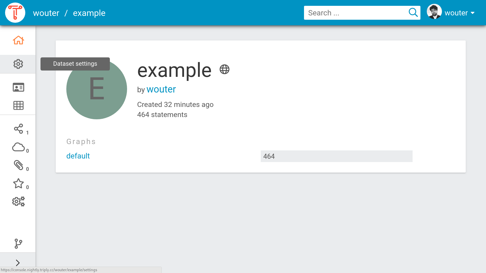 The dataset homepage looks empty without metadata. Notice the cog wheel icon, which provides access to the “Dataset settings” page.
The dataset settings page allows the following metadata to be entered:
- The dataset description. This can consist of text with (optional) Markdown formatting.
- The avatar (image) of the dataset.
- The access level of the dataset.
- The topics of the dataset.
- The example resources for the dataset.
- The license of the dataset.
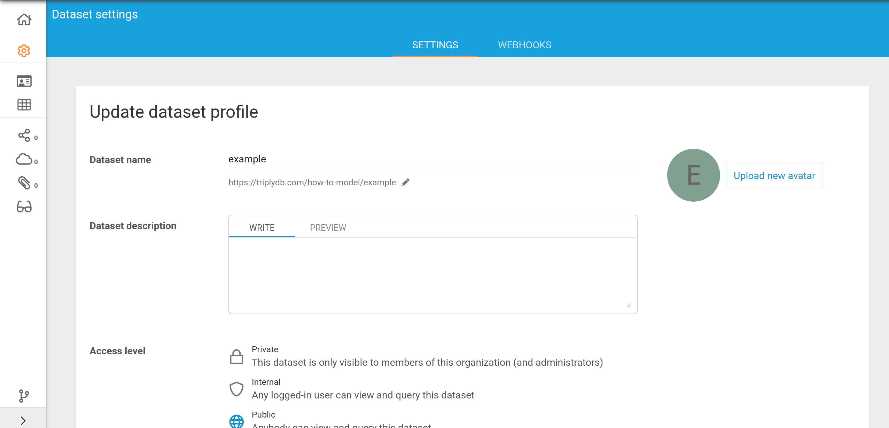 The dataset settings page allows various forms of dataset metadata to be added.
Within the TriplyDB instance your dataset is now more findable for users. Whenever a user searches on one of the topics of your dataset, or types in a word that is present in the description of your dataset, the dataset will be shown as a search result. The metadata will allow TriplyDB to give a better impression of your dataset when a user visits:
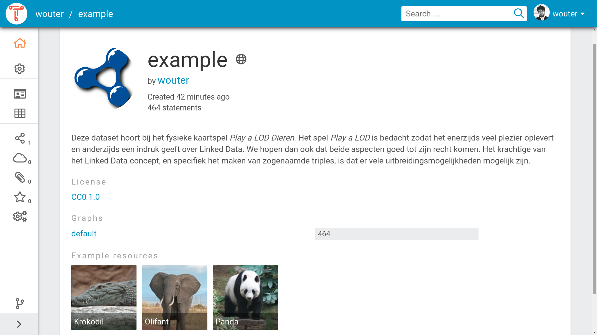 The dataset home page after metadata has been entered.
Search engines and social media applications can recognize the metadata that is entered for datasets in TriplyDB. The following screenshot shows the widget created by the Slack chat application upon entering a link to the dataset. Notice that the chat application understands metadata properties like title, description, and image.
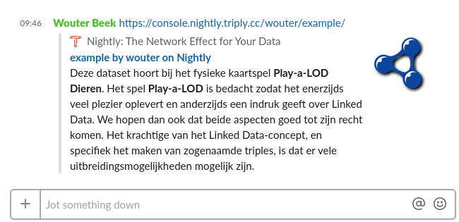 Widget created by the Slack chat application upon sharing a link to a dataset in TriplyDB.
Starting services
By default, datasets in TriplyDB can be queried through TriplyDB-js as well as through the Linked Data Fragments API.
In order to allow additional query paradigms, specific services can be started from the “Create service” page. This page is accessed by clicking on the “Services” icon in the left-hand sidebar.
TriplyDB instances can be configured with different types of services. The below screenshot shows the “Create service” page for a TriplyDB instance that allows SPARQL, Jena SPARQL, and Elasticsearch services to be created.
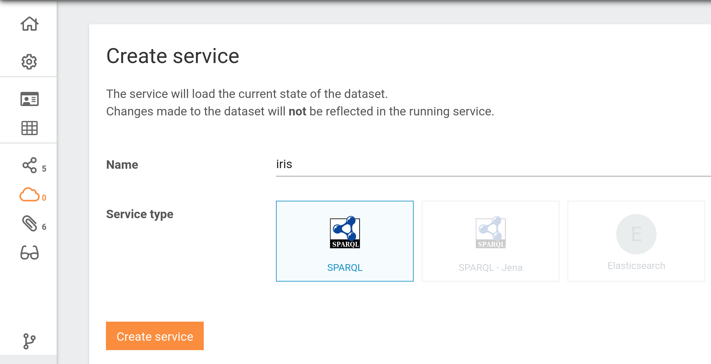 Notice that three different types of services can be created.
It is possible to create multiple services for one dataset.
Existing services
Existing services are displayed on service widgets (see screenshot). From these widgets, services can be created or deleted.
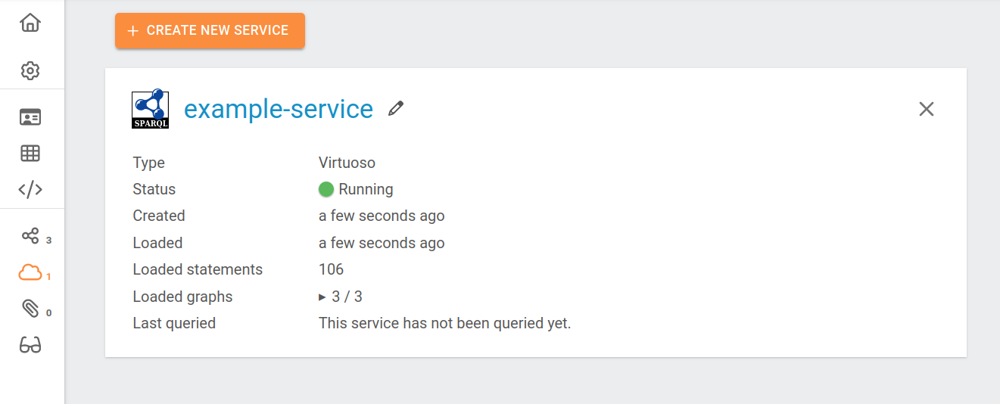
Datasets can change whenever a graph is added, deleted or renamed. When this happens, the data in a service is out of sync with the data in the dataset and a synchronization button will appear in the service widget. By clicking the button, the service will be synchronized with the current state of the dataset.
Viewing Data
TriplyDB offers several ways to explore your datasets.
Linked Data Browser
The linked data browser offers to traverse the data by focusing on one node at the time. The node is describe using it's properties, which can be followed to other nodes in the graph. 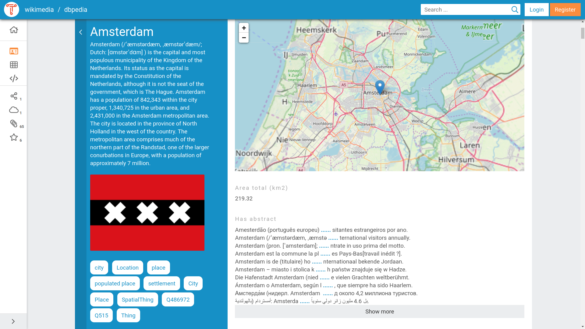
The following properties provide additional information about your linked data, enabling the LD-browser to display visualizations and provide a better user experience.
Types
The predicate rdf:type allows you to specify the type or class of a resource in your linked data:
By using rdf:type, you can indicate the category or classification of the resource, which can help the LD-browser understand the nature of the data and display it appropriately.
In the example below, you can see that "Iris setosa" is the type of flowering plant due to the usage of the rdf:type property.
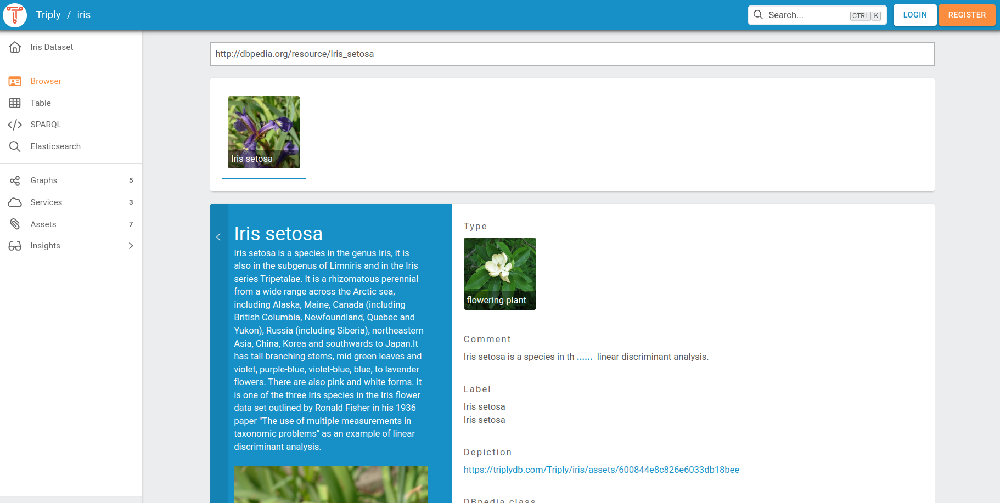
Labels
Labels are typically used to provide a concise and meaningful title or display name for a resource, making it easier for users to understand the content of your linked data. These predicates allow you to provide human-readable labels or names for your resources:
- The property
rdfs:label - The property
skos:prefLabel
In the example below, the rdfs:label property was used to denote the label(name) of the Pokemon, resulting in the display of "Pikachu" above its corresponding image.
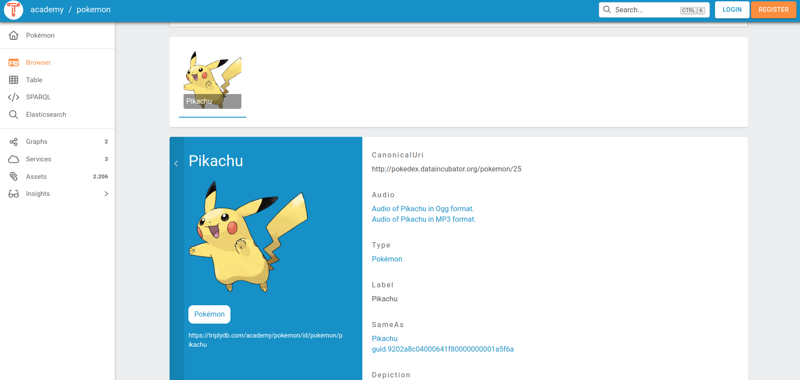
Descriptions
Descriptions can provide additional context or information about a resource, helping users understand its purpose, content, or significance. These predicates allow you to provide textual descriptions or comments about your resources:
- The property
sdo:description - The property
rdfs:comment
In the following example rdfs:comment was used to provide additional information on Iris Setosa.
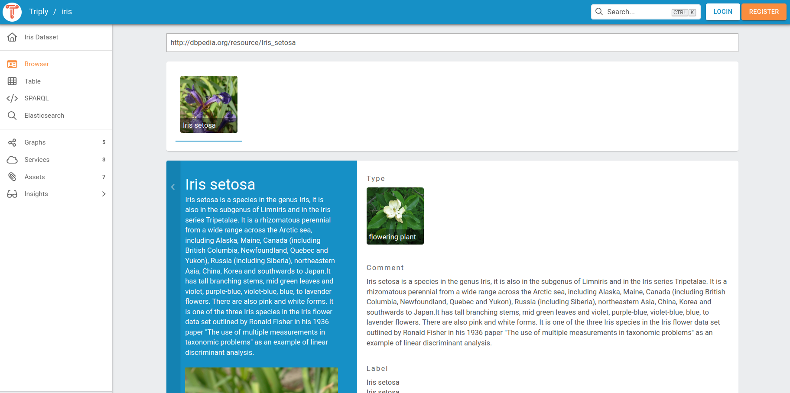
Geo
These are some of the predicates used for representing geographic information in your LD-browser:
- The property
geo:asWKT: This property allows you to specify the geometries of geographic features using the Well-Known Text (WKT) format, which can be visualized on a map in the LD-browser. - The property
geo:hasGeometry: This property is used to link a geographic feature with its corresponding geometry. - The property
geo:location: This property is used to indicate the location of a resource using geographic coordinates, such as latitude and longitude, in your linked data.
In the following example geo:hasGeometry property was used to showcase a map depicting the location of Instituut voor Beeld en Geluid.
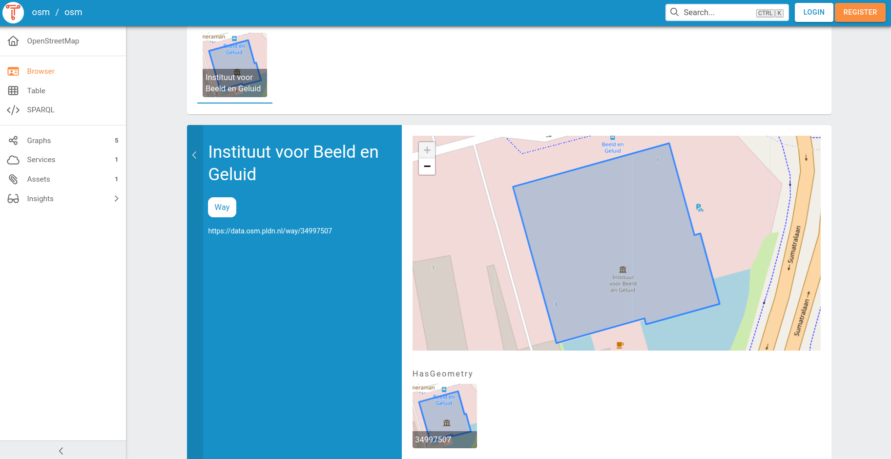
Images
These predicates allow you to associate images or visual representations with your resources:
- Class
sdo:ImageObject - The property
foaf:depiction - The property
foaf:thumbnail - The property
foaf:img - The property
sdo:image - The property
sdo:contentUrl
By using these predicates, you can provide URLs or references to images that can be displayed alongside your linked data in the LD-browser.
In the example below, foaf:depiction was used to display picture of Pikachu in the LD-browser:
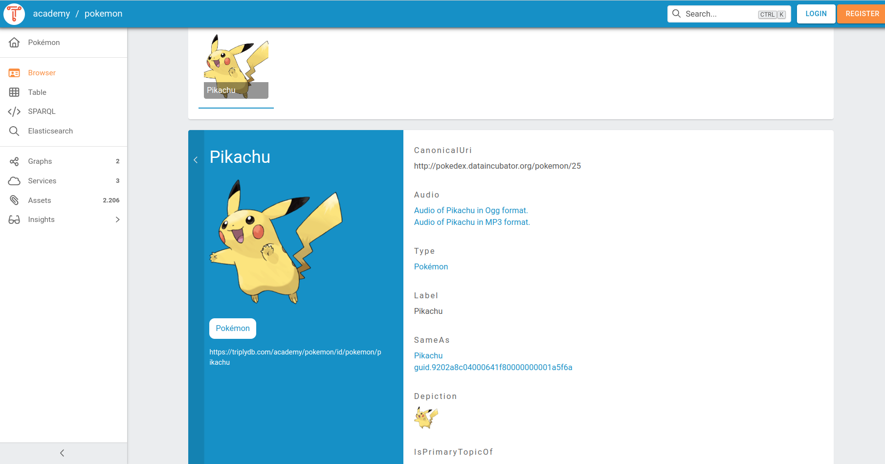
Audio
These predicates allow you to associate audio content with your resources:
- The class
sdo:AudioObject - The property
sdo:audio - The property
sdo:contentUrl
You can use these predicates to provide URLs or references to audio files that can be played or streamed within the LD-browser.
In the following example, sdo:audio was used to showcase audio content of the Carnival Festival within the LD-browser.
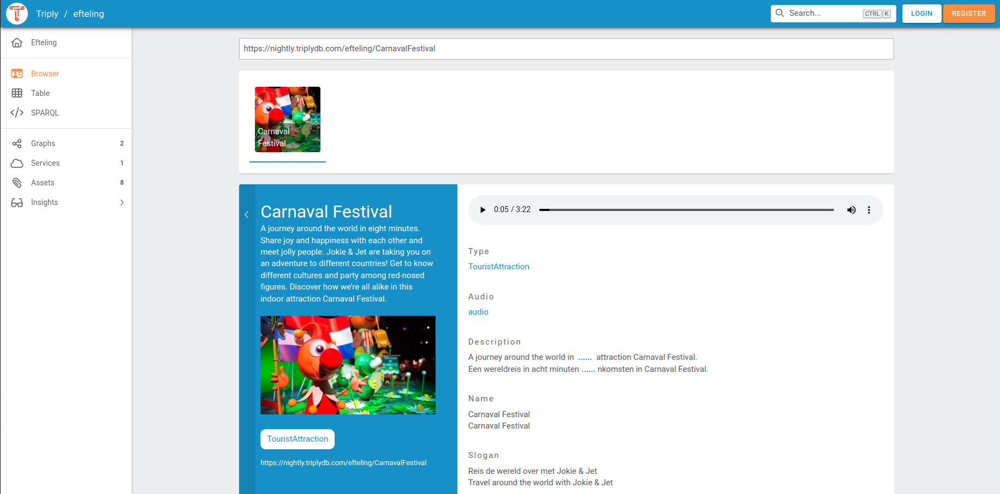
Video
These predicates allow you to associate video content with your resources:
- Class
sdo:VideoObject - Property
sdo:video - Property
sdo:contentUrl
You can use these predicates to provide URLs or references to video files that can be played or streamed within the LD-browser.The video formats that are included in this dataset are ".mp4", ".webm", ".ogg".
In the following example, sdo:contentUrl was used to showcase video content of the Kleine Piep within the LD-browser.
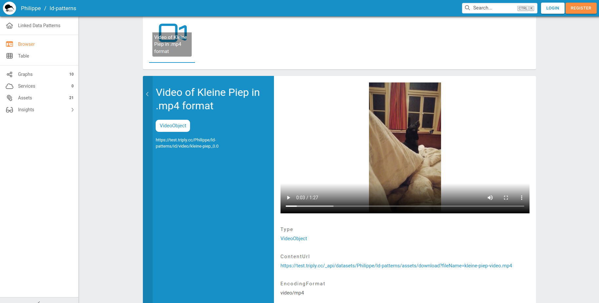
Linked Data Table
The linked data Table shows a dataset at the triple level. The first three columns represent the subject, predicate, and object position of the triple. The fourth column represents the graph to which the triple belongs.
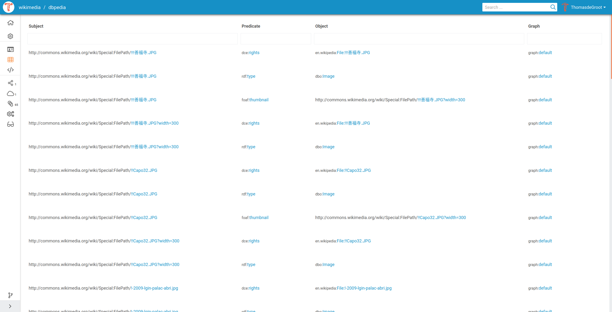
The linked data Table can be used to perform simple queries by filling in the subject, predicate, object, and/or graph using the text field.
Terms in the linked data Table can be dragged and dropped between columns. This allows a simple form of graph navigation. For example, an object term can be dragged to the subject column in order to show the triples in which that term appears in the subject position.
Queries in the linked data Table can also be performed automatically through the Statements API and the Triple Pattern Fragments API.
SPARQL IDE
When a dataset has a running SPARQL service, the data can be queried from the SPARQL IDE. The SPARQL IDE is an extended version of the Open Source Yasgui query editor.
Saving a SPARQL query
It is often useful to save a SPARQL query for later use. This is achieved by clicking on the save icon in the top-right corner of the SPARQL Editor. Doing so will create a Save Query.
Sharing a SPARQL query
It is sometimes useful to share a SPARQL query with somebody else, or to have a cURL command that can be used to run the same SPARQL query from a command line. This is achieved by clicking on the share icon in the top-right corner of the SPARQL Editor. This brings us a dialog from which the SPARQL query can be copied in the following three forms:
-
The URL-encoded SPARQL query. This is a long URL that includes the endpoint, the query, and visualization settings. Notice that this URL can be quite long for complex queries and/or visualizations. Long URLs are not supported by some application that cut off a URL after a maximum length (often 1,024 characters). Use one of the other two options or use Saved Queries to avoid such restrictions.
-
A short URL that redirects to the full URL-encoded SPARQL query.
-
A cURL command that can be copy/pasted into a terminal application that supports this command. cURL is often used by programmers to test HTTP(S) requests.
Saved Queries are a more modern way of sharing SPARQL queries. They do not have any of the technical limitations that occur with URL-encoded queries.
Transfer a SPARQL query
The SPARQL queries could be transferred to another account or an organization. To do that, go to the setting field at the query page,
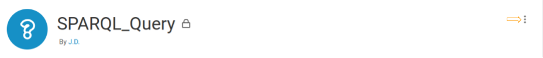
choose transfer
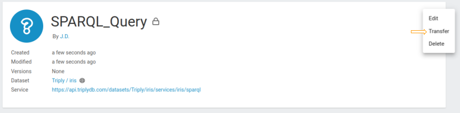
and then choose where the SPARQL query should be moved to.
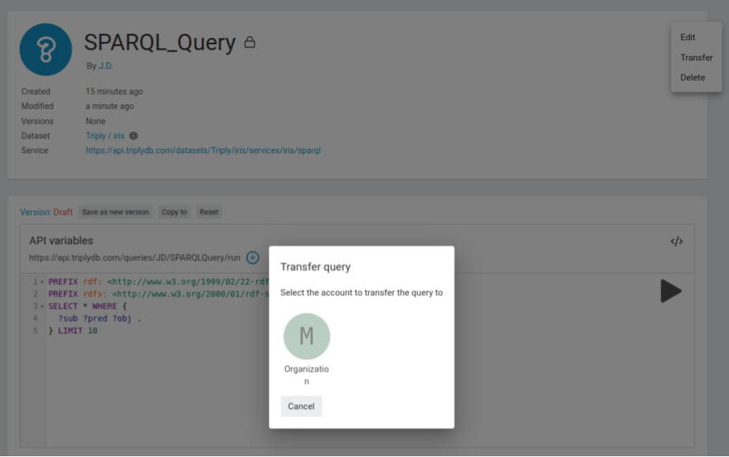
After the destination is set you would be redirected to the SPARQL query new page. The SPARQL query could be transferred from an account to an organization and vice versa.
Copy a SPARQL query
Users can copy SPARQL queries to another account or an organization. To do that, click on three dots in the upper right corner of the query and choose the copy option.
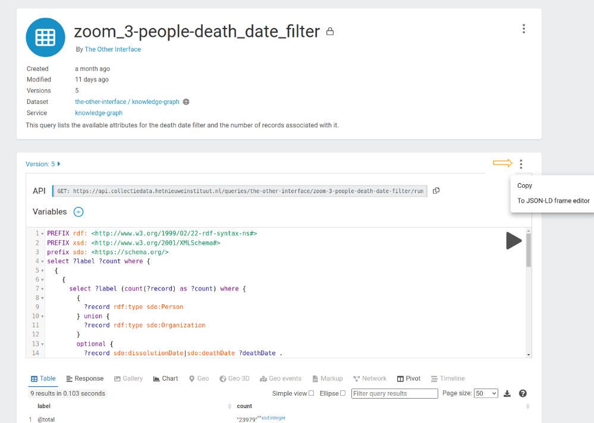
Then, choose where the SPARQL query should be moved to.
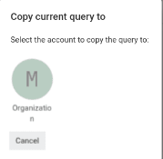
After setting the destination, you will be redirected to the SPARQL query new page. The SPARQL query can be copied from an account to an organization and vice versa.
ElasticSearch
When a dataset has a running Elasticsearch service, textual searches can be performed over the entire dataset. Text search with Elasticsearch works like a search engine and returns any node that contains your search term, or contains the search term in any of its properties. It is also possible to write a custom query using the Elasticsearch Query DSL (Domain Specific Language).
Insights
The insights page has been developed to give you a succinct overview of the linked data at hand. It holds two views: the class frequency and the class hierarchy view.
Class frequency
The class frequency diagram shows how often classes and properties appear in a graph. The drop-down on the top of the visualization selects the graph for which the class frequency is drawn. The visualization shows the 10 most frequent classes in the selected graph. The exact number of occurrences can be seen when hovering over the bar of a class, also showing the complete IRI/prefixed IRI. When clicking on the bar of a class the node will expand and show the 10 most frequent predicates of that class.
Class hierarchy
The class hierarchy diagram shows the hierarchy of the dataset in three
different visualizations. Each of the diagrams are created by the
rdfs:subClassOf relations and the classes in the dataset.
TriplyDB has three different visualization methods for the classHierarchy:
- Bubbles visualization
- Treemap visualization
- Sunburst visualization
All three visualizations are interactive in two ways. It is possible to hover over them, which will show information about the layer the mouse is on, or to click on them, so the visualization zooms in one or more layers. For each visualization it is also possible to zoom out:
- Bubbles visualization: click the outside of the bubble
- Treemap visualization: use the breadcrumbs trail shown above the visualization
- Sunburst visualization: click the innermost circle of the visualization
When does the class hierarchy show?
- A class only appears in the class hierarchy tab if it has instances (connected to the class via
rdf:type). - The class hierarchy cannot be shown if it contains a cycle, meaning that some class is (indirectly) its own subclass.
Exporting Data
This section explains how a user of TriplyDB can export linked data stored in the triple store.
Export Datasets
The data stored on TriplyDB is stored in two different containers: datasets and graphs. Each triple contained in a dataset is part of exactly one graph. A graph is always a part of a dataset and a dataset can have multiple graphs. The following screenshot shows the dataset "Pokémon" that contains three graphs: "data" and "vocab". The graph "data" contains 28.588 triples and the graph "vocab" 185 triples. By summing up the amount of triples contained in the two graphs the dataset "Pokémon" contains 28.773 triples in total.
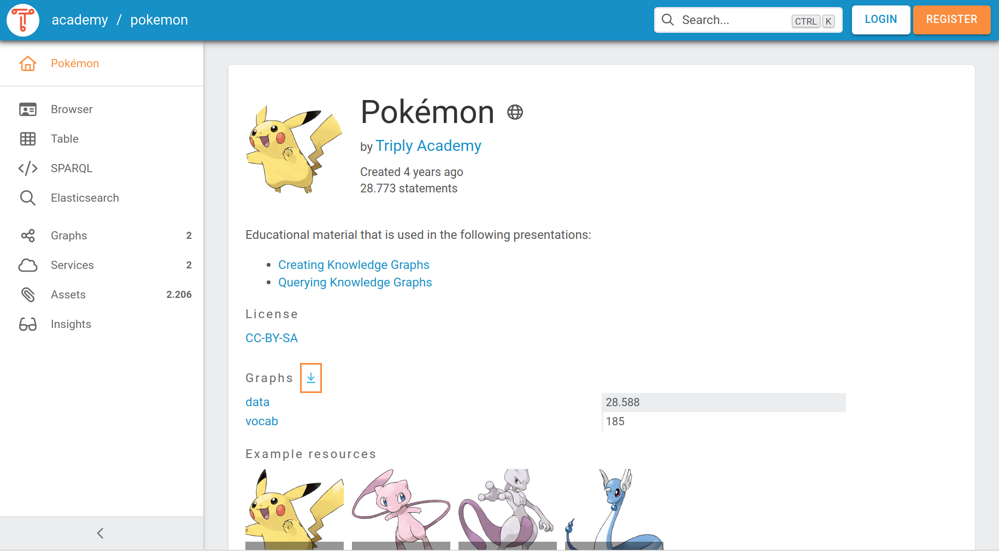
To export the dataset users can click on the downwards facing arrow. In our example, the dataset is automatically downloaded as the file "pokemon.trig" and compressed with .gz. The name of the file is the name of the dataset. The used serialization format is ".trig" because that is the standard format to store triples that are appended to graphs.
It is also possible to export the whole dataset on the graphs interface. Select "Graphs" and "EXPORT ALL GRAPHS".
Export Graphs
To export only one graph select "Graphs" and the arrow next to the graph that should be exported.
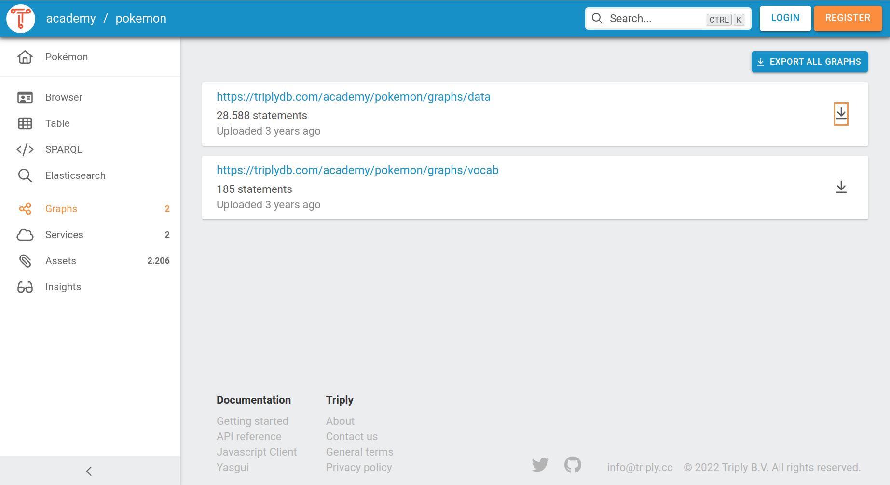
In this case the downloaded file "https___triplydb.com_academy_pokemon_graphs_data.trig.gz" is named after the graph and also compressed with "gz".
Extract
The process of extracting the compressed file is the same for exporting graphs and datasets. The downloaded and compressed file is automatically stored in the "Downloads" folder. Select the file with the ending ".gz" and open it with a double click. This opens an application that looks similar to the following screenshot:
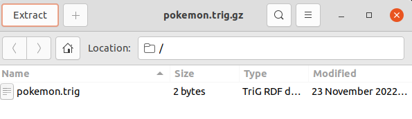
Select the file that should be extracted. In this case select "pokemon.trig" and click on "Extract". In the following step choose the location where the extracted file should be stored.
Saved Queries
A Saved Query is a versioned SPARQL query with its own URL. Using this URL, users are able to view any version of the query and its results. It can also be used to run the query and retrieve the results from a browser or a program, removing the hassle of figuring out how to run a SPARQL query.
How to save a query
There are two ways to create a saved query. You need to be logged in and have authorization rights on the dataset to use this feature
- When working from the SPARQL IDE
- Using the Saved Queries tab in a dataset
Creating a saved query with the SPARQL IDE is done by writing a query/visualization and hitting the save button 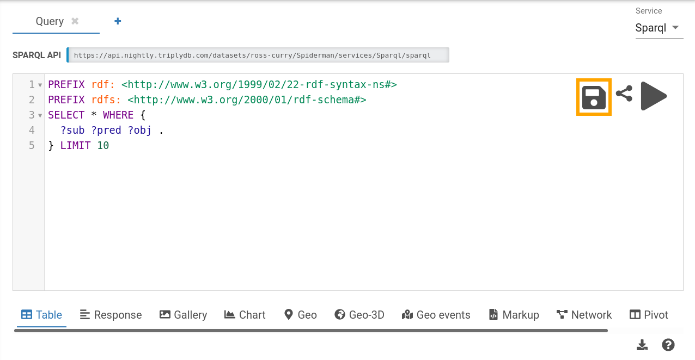
Creating a new version
Updating the saved query can be done by clicking a query in the Saved Queries tab and editing the query or the visualization. Hit the save button to save it as a new version.
Using a saved query
Sharing a saved query
To share a saved query, for example in Data Stories, you can copy the link that is
used when you open the query in TriplyDB. Let's say you have a query called
Timelined-Cars-BETA in the dataset core under the account dbpedia and you
want to use version 6. Then the following link would be used
https://triplydb.com/DBpedia-association/-/queries/timeline-cars/8
If you want to always use the latest query, you can simply omit the version number like so
https://triplydb.com/DBpedia-association/-/queries/timeline-cars
Downloading a query result
The result of a query can be downloaded via the TriplyDB interface. After downloading the query, open it in TriplyDB. e.g. https://triplydb.com/DBpedia-association/-/queries/timeline-cars/8. Choose the option Response and click on the download icon or scroll down and click on Download result.
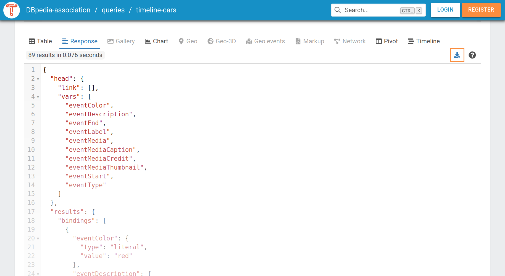 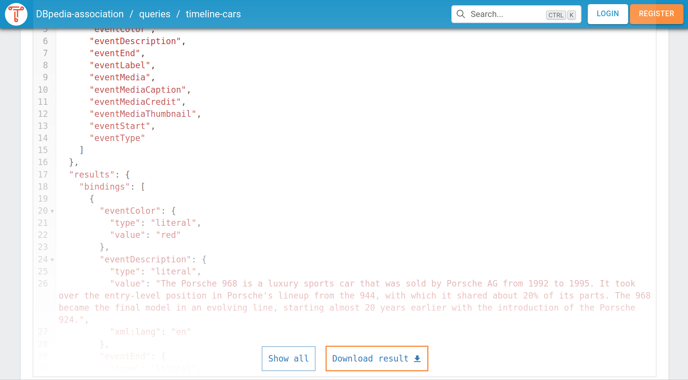
The downloaded file is automatically stored in the Downloads-folder and has the name of the query. In our example, the file is called timeline-cars.json. The downloaded file contains the query result as a json-object. TriplyDB also displays the json-object when selecting the option Response.
To download the query result in CSV-format, select the option Table and click on the download icon. The downloaded file is named after the query with the suffix .csv.
Download more than 10 000 query results - SPARQL pagination
This section explains how to retrieve all results from a SPARQL query using pagination.
Often SPARQL queries can return more than 10.000 results, but due to limitations the result set will only consist out of the first 10.000 results. To retrieve more than 10.000 results you can use pagination. TriplyDB supports two methods to retrieve all results from a SPARQL query. Pagination with the saved query API or Pagination with TriplyDB.js.
Pagination with the saved query API
Each TriplyDB instance has a fully RESTful API. The TriplyDB RESTful API is extended for saved SPARQL queries. The API for saved queries is extended with two arguments that the query is able to process paginated result sets. The arguments are ‘page’ and ‘pageSize’. An example of a paginated saved SPARQL query request would look like:
https://api.triplydb.com/queries/academy/pokemon-color/run?page=3&pageSize=100
The example request argument ‘page’ corresponds to the requested page. In the example request this would correspond to the third page of paginated SPARQL query, according to the ‘pageSize’. There is no maximum ‘page’ limit, as a SPARQL query could return an arbitrary number of results. When no results can be retrieved for the requested page an empty page will be returned.
The argument ‘pageSize’ corresponds to how many results each page would contain. The ‘pageSize’ has a default of 100 returned results and a maximum ‘pageSize’ limit of 10.000 returned results. The request will return an error when the ‘pageSize’ is set higher than 10.000.
he RESTful API for the saved SPARQL queries follows the RFC 8288 standard.
The request will return an response body containing the result set and a response header. The response header contains a link header with the relative "next" request, the relative "prev" request, and the relative "first" request. By following the "next" link header request you can chain the pagination and retrieve all results.
link:
<https://api.triplydb.com/queries/academy/pokemon-color/run?page=4&pageSize=100>; rel="next",
<https://api.triplydb.com/queries/academy/pokemon-color/run?page=2&pageSize=100>; rel="prev",
<https://api.triplydb.com/queries/academy/pokemon-color/run?page=1&pageSize=100>; rel="first"
Pagination with TriplyDB.js
TriplyDB.js is the official programming library for interacting with TriplyDB. TriplyDB.js allows the user to connect to a TriplyDB instance via the TypeScript language. TriplyDB.js has the advantage that it can handle pagination internally so it can reliably retrieve a large number of results.
To get the output for a construct or select query, follow these steps:
- Import the TriplyDB library and set your parameters, regarding the TriplyDB instance and the account in which you have saved the query as well as the name of the query. Do not forget that we perform TriplyDB.js requests within an async context.
ts
import Client from '@triply/triplydb'
async function run() {
// Your code goes here.
const client = Client.get({token: process.env.TRIPLYDB_TOKEN})
const account = await client.getAccount('account-name')
const query = await account.getQuery('name-of-some-query')
}
run()
- Get the results of a query by setting a
resultsvariable. More specifically, for construct queries you use thestatements()call:
ts
const query = await account.getQuery('name-of-some-query')
const results = query.results().statements()
For select queries you use the bindings() call:
ts
const query = await account.getQuery('name-of-some-query')
const results = query.results().bindings()
Additionally, saved queries can have 'API variables' that allow you to specify variables that are used in the query. Thus, if you have query parameters, pass their values as the first argument to results as follows:
ts
// For SPARQL construct queries.
const results = query.results({
someVariable: 'value of someVariable',
anotherVariable: 'value of anotherVariable'
}).statements()
// For SPARQL select queries.
const results = query.results({
someVariable: 'value of someVariable',
anotherVariable: 'value of anotherVariable'
}).bindings()
-
To iterate the results of your SPARQL query you have three options:
a. Iterate through the results per row in a
for-loop:ts // Iterating over the results. for await (const row of results) { // execute something }Note: For select queries thefor-loop iterates over the rows of the result set. For construct queries thefor-loop iterates over the statements in the result set.b. Save the results to a file. This is only supported for SPARQL
constructqueries:ts // Saving the results of a SPARQL construct query to a file. await results.toFile('my-file.nt')c. Load all results into memory in the form of an Array. Note that this is almost never used. If you want to process results, then use the 3a option; if you want to persist results, then option 3b suits better.
ts // Loading results for a SPARQL construct or SPARQL select query into memory. const array = await results.toArray()
Using a saved query as REST-API (Advanced)
Each TriplyDB instance has a fully RESTful API. The TriplyDB RESTful API is extended for saved SPARQL queries. A saved query can be used as a RESTful API to retrieve data from your linked dataset. The URL next to the keywork API is the RESTful API URL and can be used with RESTful API libraries. You can copy the RESTful API by pressing the copy button just behind the URL. Pressing the copy button from the above query will result in the following run url:
https://api.triplydb.com/queries/DBpedia-association/timeline-cars/run
When you copy this URL in your browser or fetch the URL with curl, you will get a get request to a RESTful API and get a JSON representation of the data in your browser or command window.
Using a saved query in Python or R notebooks (Advanced)
SPARQL queries as a RESTful API, also means you can transport your data to your Python script, R script or Jupyter notebook. To use the result set from your SPARQL query you need to connect your script to the saved SPARQL query. To do this you will need to write a small connector. To help you out TriplyDB has added a code snippet generator for Python and R. This snippet contains the code to retrieve the data from the SPARQL query into your script or notebook. You can open the code snippet generator by clicking on the '' button on the right side of the screen.
Clicking the '' button opens the code snippet screen. Here you select the snippet in the language you want to have, either Python or R. You can then copy the snippet, by clicking the 'copy to clipboard' button or selecting the snippet and pressing ctrl-c. Now you can paste the code in the location you want to use the data. The data is stored in the data variable in JSON format.
When the SPARQL query is not public, but instead either private or internal, you will need to add an authorization header to the get request. Without the authorization header the request will return an incorrect response. Checkout Creating your API token about creating your API-token for the authorization header.
Check out the SPARQL pagination page when you want to query a SPARQL query that holds more than 10.000 results. The SPARQL pagination page will explain how you can retrieve the complete set.
Query metadata {#query-metadata}
Every Saved Query has a metadata section. This metadata section includes the following two links: - A link to the dataset over which the query is executed. Clicking this links navigates to the dataset homepage. - A link to the service by which the query is executed. Clicking this link navigates to the services page that includes that service.
Users can specify a query title and description, both of which are included as metadata. The access level and version of the query are also exposed as metadata. See the following screenshot for how the metadata fields are shown in TriplyDB:
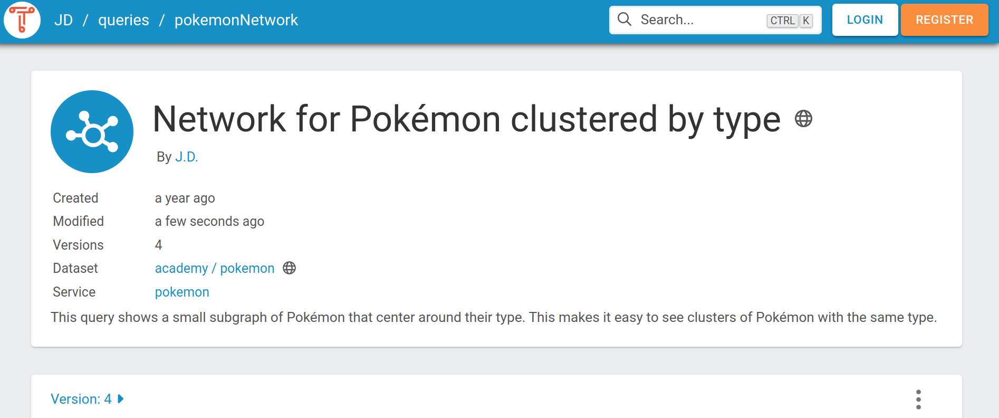
Users can specify additional metadata inside the query string, by using the GRLC annotation format. GRLC annotations start with the hash and plus sign characters (#+). Visit the GRLC project to learn more about this format. For example, the following GRLC annotation could indicate to a software application that the query should be repeated every hour:
#+ frequency: hourly
See the Triply API documentation for how to retrieve query metadata, including how to retrieve GRLC annotations.
Data stories {#data-stories}
A TriplyDB data story is a way of communicating information about your linked data along with explanatory text while also being able to integrate query results.
Creating a data story
You can create your own data story via the stories tab on TriplyDB. If this is your first time creating a data story, your view will look something like the image below. If you already are a proud owner of a data story, you will find it here. To create a new one, you can click the orange "Create story" button and you’ll see the same form.
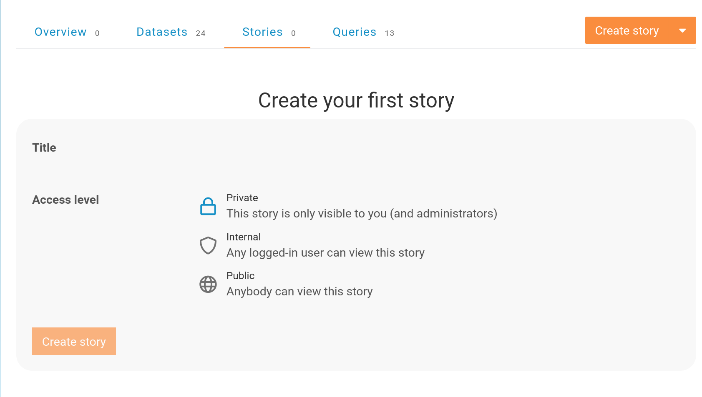
In this form, you can fill in the title and set the access level for a data story. When everything is set, press the "Create story" button.This will take you to a new page where you can customize the data story.
Editing a data story
As shown in the image below, in the top right corner of the page, there is a menu button. Here you will find the following: - Story settings: Here you can change the title and the access level of your story. - Change banner: Here you can change the banner, just choose an image that you want as your banner (wide images work best). - Transfer: To transfer the story to a different user or organization. - Copy: To copy the story to a different user or organization. - Delete: To delete the story.
In the right lower corner you see a button with a notepad. With this button, you can toggle between the edit view, which allows you to edit the story, and the reader view, which is how readers of your story will perceive this page.
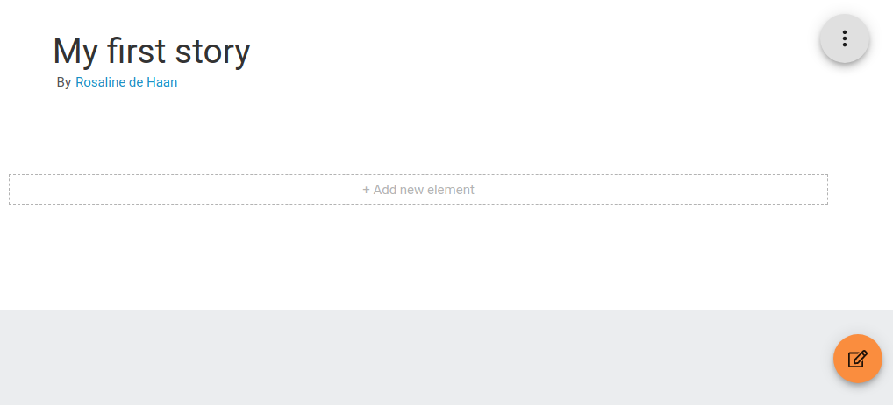
Adding elements
To create your first element press "+ Add new element". This will open a new form as shown in the images below. Here you can select what kind of element you want to add to your data story; you’ll have the option to write text, to select an already existing SPARQL query, or even to create a new SPARQL query.
Existing query
Let’s start by selecting a query for our data story. Maybe you have already created one, but if you haven’t, you can select one of the queries available to you. You can search in the Query search bar and select the one you want, for example "our-first-select-query". Optionally you can select the version of the query and set the caption. When everything is set, press "Create story element". And look, we have added our first element to our story!
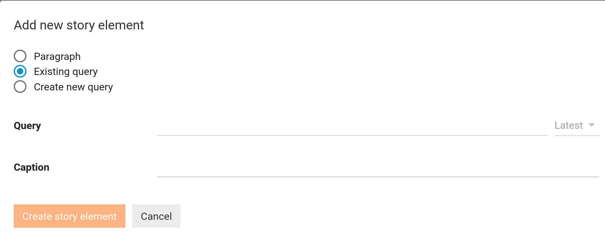
Paragraph
Data sometimes needs accompanying text to be completely understandable. TriplyDB not only supports writing plain text, but TriplyDB paragraphs are also markdown compliant. The markdown that you’ll add in the paragraph text box will be rendered as HTML and can be previewed. TriplyDB also supports images, and even code blocks with highlighting for the most common linked data and programming languages.
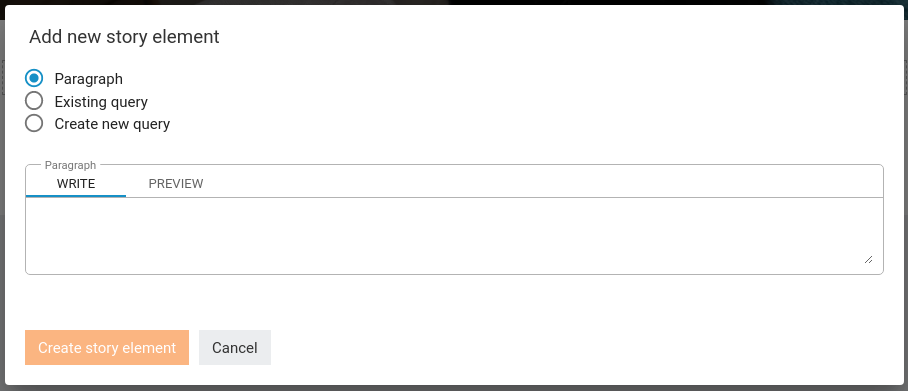
Sharing and embedding
Before you know it, you will have created your first data story. Congratulations! Now it is time to share it with the world, but don’t forget to set the access level to “public”. Then you have two options: 1. You can simply share the URL in TriplyDB. 2. You can embed the Data Story on your own webpage. Scroll all the way to the end of your Data Story and click the “ Embed” button. This brings up a code snippet that you can copy/paste into your own HTML web page.

Admin settings Pages
You can use the console to perform administrator tasks. The administrator tasks are performed within the admin settings page. The admin settings pages are accessible by clicking on the user menu in the top-right corner and selecting the “Admin settings” menu item. You must have administrator privileges to access these pages and perform administrator tasks.
Overview page
The first page that comes into view when opening the admin settings pages is the overview page. This page contains an overview of all the important statistics of the instance. The page also shows how close the instance is to hitting one or more limits.
If no limit is set, the statistics are shown as a counter. If a limit is set a gauge is shown with a green, orange or red bar. The colors denote how far that statistic of the instance is to the limit. Green means not close to the limit, Orange means close to the limit, Red means over the limit.
General overview
The general overview gives an insight into the software version of the instance. Each instance consists of a console and an API. The console is the web interface of the instance and has a build date corresponding to the build date of the docker image of the console and a version number corresponding to the version of the docker image. The API is the layer between the console and the data. The API is separate from the console and is a different docker image. The API also has a version and build date of the docker image. Also contains a starting time, and an updated time, the moments when the docker image is started for this instance or when the docker image is updated for the instance.
Accounts overview
The accounts overview shows how many organizations and users are in this instance. The organizations and users are shown in a counter if no limit is set. If a limit is set on the number of organizations and/or users of the instance a gauge is shown.
Data overview
The data overview shows multiple statistics about datasets. The first counter shows the amount of datasets on the instance. The second and third counters show the amount of graphs and statements in all graphs. The fourth and fifth counters show the amount of unique graphs and statements. When a graph is copied from one dataset to another, the data in that graph does not change. The amount of unique data does not change either. The amount of unique data is a more representative way of calculating the amount of data in the instance. All statistics are shown in a counter, if no limit is set. If a limit is set on one of the statistics of the instance a gauge is shown.
Services overview
The data overview shows how multiple statistics about services. The first counter shows the total amount of services on the instance, The second counter shows the total amount of statements in all the services. Then for each of our service types a specific counter is created. Each containing the amount of services and the amount of statements in that service. All statistics are shown in a counter if no limit is set. If a limit is set on one of the statistics of the instance a gauge is shown.
Settings page
The settings page is the main page for administrators to institute instance wide changes. An administrator can change the site logo's here, change the contact email or update site wide prefixes.
Set logos and banner
For changing the logos and the banner follow the next steps: 1. Click on the “Admin settings” link in the user menu (top-right corner) and click the "Settings" tab. This brings up an overview of all the settings an admin can set for the TriplyDB instance.
- Under "Site logos" and "Site banner" you can upload a site logo (square and landscape) or a banner. Make sure you use SVG files with a maximum size of 5 MB.
Setting metadata
For changing the metadata follow the next steps: 1. Click on the “Admin settings” link in the user menu (top-right corner) and click the "Settings" tab. This brings up an overview of all the settings an admin can set for the TriplyDB instance.
- On that page navigate to "Site metadata", it looks as follows:
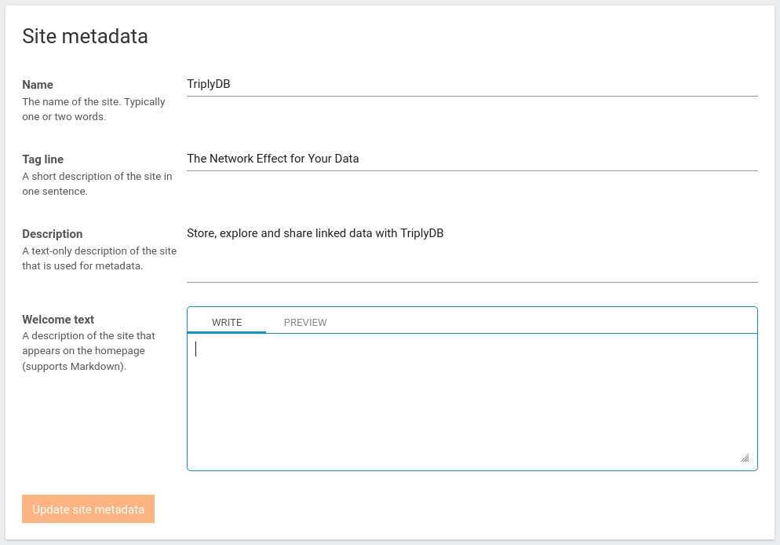
- Here you can set the name, tag line, description and welcome text. The name of your website appears in your browser tab. The welcome text appears on the homepage of your TriplyDB instance. The tagline and description are for metadata purposes (e.g. findability and website previews).
Setting contact email
For changing the contact email follow the next steps: 1. Click on the “Admin settings” link in the user menu (top-right corner) and click the "Settings" tab. This brings up an overview of all the settings an admin can set for the TriplyDB instance.
- On that page navigate to "Contact Email". Here, you can change the contact email to a new contact email for the instance.
Setting example datasets
Example datasets are introduction datasets on the frontpage of your instance. The Example datasets are datasets that are interesting for people that visit your page to see and interact with. Most often you'll use open datasets to show them off on the frontpage. You can also use internal or private datasets, but these will only be visible if the person seeing them has the right access rights.
For editing the example datasets follow the next steps: 1. Click on the “Admin settings” link in the user menu (top-right corner) and click the "Settings" tab. This brings up an overview of all the settings an admin can set for the TriplyDB instance.
-
On that page, navigate to "Example datasets". Here, you can execute the following changes:
-
You can move datasets up and down in the order by clicking and holding your left mouse button over the three horizontal lines in front of the dataset name. You can then drag the selected dataset to their new spot.
- In the search field below the already added datasets you can add a new example dataset by typing in the search field and selecting the correct dataset.
- You can remove datasets by pressing the
xon the right side of the dataset name to remove it from the example dataset list.
Setting Starter dataset
The starter dataset is a beginner-friendly linked dataset that can be an introduction into linked data when a user creates an account for the first time. The starter dataset is visible for a user when the user has not yet created a dataset on its own account.
For editing the example datasets follow the next steps: 1. Click on the “Admin settings” link in the user menu (top-right corner) and click the "Settings" tab. This brings up an overview of all the settings an admin can set for the TriplyDB instance.
- On that page navigate to "Starter dataset". Here you can change the starter dataset to a new starter dataset for the instance by typing in the search bar a name of an existing dataset to replace the started dataset. This dataset then will be presented to users on their account page, with an option to import(copy) them immediately. This needs to be a public dataset! If it's not public, new users will have to create a dataset. The starter dataset is only shown if the user currently has no datasets.
Setting Authentication
One of the roles of an administrator is to make sure only the right people will sign up for the TriplyDB instance. To do this, an administrator can set up authentication protocols. The authentication protocols can block people from signing up to instances where they are not allowed to sign up to.
For changing the authentication protocols follow the next steps: 1. Click on the “Admin settings” link in the user menu (top-right corner) and click the "Settings" tab. This brings up an overview of all the settings an admin can set for the TriplyDB instance.
- On that page navigate to "Authentication". Now you can change the password sign up. Allowing people to only register with a password or they are only allowed to register with a google or Github account. When password signup is enabled, the administrator can also set the permitted signup domains. Only users with e-mail addresses that match these domains are allowed to sign-up. Wildcards are allowed and domains are comma separated, for example: mydomain.com,*.mydomain.com.
Setting Site-wide prefixes
One of the advantages of using TriplyDB is that you can set site-wide prefixes once and use them everywhere on the instance. Site-wide prefixes are prefixes defined in the admin settings and can be used for all datasets that contain the IRIs matching the prefixes.
For editing the side-wide prefixes follow the next steps: 1. Click on the “Admin settings” link in the user menu (top-right corner) and click the "Settings" tab. This brings up an overview of all the settings an admin can set for the TriplyDB instance.
-
On that page navigate to "Site-wide prefixes". Here, you can execute the following changes:
-
Each field of the already added site-wide prefixes you can edit. You can edit the prefix label by typing in the first field. You can edit the prefix IRI and in the second field. Pressing
UPDATE PREFIXESupdates the list. - In the last field below the already added site-wide prefixes you can add a new site-wide prefix by typing in the first field the prefix label, and in the second field the prefix IRI. Pressing
UPDATE PREFIXESupdates the list. - You can remove prefixes by pressing the
xon the right side of the prefixes name to remove it from the site-wide prefixes list.
Account overview page
The account page governs all the accounts of an instance. The paginated table shows all the accounts of the instance. The table is equipped with filters and sorting mechanisms to quickly search for and locate specific accounts according to search and filter criteria. The table also has a search field at the right side to quickly do wildcard searching. The table sorts all accounts automatically on the created at date with the latest created at date accounts first.
The filters on top of the table can be used to filter the following columns:
- Name
- The name of the account, you can order the table based on the alphanumeric ordering, and filter based on the sequence of characters appearing in the filter. The name is also a URL that brings you to the location of the account.
- Type
- Type of the account, this can either be 'Organization' or 'User'. In the filter you can select a specific account type or 'All' account types.
- Display name
- The display name of the account, often an account has both a name and a display name. The display name is not limited to a specific set of characters, as it is not used as an URL. You can order the table based on the alphanumeric ordering, and filter based on the sequence of characters appearing in the filter.
- The email address of the account. You can order the table based on the alphanumeric ordering, and filter based on the sequence of characters appearing in the filter.
- Created at
- How long ago an account was created. When you hover over the text you can see the precise moment an account is created. You can order accounts based on the moment of creation.
- Updated at
- How long ago an account has been updated with new metadata such as display name or password. When you hover over the text you can see the precise moment an account is last updated. You can order accounts based on the moment of updated at time.
- Last activity
- How long ago the account has been last active. When you hover over the text you can see the precise moment an account was last active. You can order the accounts based on the moment of last time the account was active.
- Role
- Role of the account, this can either be 'light', 'regular' or 'administrator'. In the filter you can select a specific role or 'All' roles.
- Verified
- An account can be verified or not, to verify an account, the user needs to click on the verify button in the email. Or an administrator has verified the account in the account settings of that account. Only 'users' need to be verified.
- Disabled
- An account can be disabled or not, to disabled an account, the user needs to click on the disabled button in their user settings. Or an administrator has disabled the account in the account settings of that account.
- legal consent
- An account can have accepted the legal consent or not, to accept legal consent, the user needs to click on the accept legal consent either when creating an account or by checking it in the user settings. Only 'users' need to have accepted legal consent.
For each account you can execute the following actions:
- Open account settings
- For each account, there is a button such that the administrator can directly go to the account settings of the user or organization. The account settings are behind the `cogwheel` button.
Add new user(s)
Go to the “Accounts tab” to receive an overview of all accounts on the TriplyDB instance.
The type of account can be observed based on the following icons:
| Icon | Account type |
|---|---|
| organization | |
| user |
Create a new user
New users can only be created by administrators by performing the following steps:
-
Click on the “Admin settings” link in the user menu (top-right corner) and click the “Accounts” tab. This brings up an overview of all users and organizations on the TriplyDB instance.
-
Click the “Add user” button.
-
Fill in the user name and email address of the prospective user. The user name must consist of alphanumeric characters (
A-Za-z) and hyphens (-). -
Click the “Add user” button. This sends an account creation email to the prospective user, containing a link that allows them to log in.
In addition to the above default procedure, the following two options are provided for user account creation:
-
Temporary account: By default, user accounts do not expire. Sometimes it is useful to create a temporary account by specifying a concrete date in the “Account expiration date” widget.
-
Preset password: By default, a user can set her password after logging in for the first time by clicking on the link in the account creation email. When a password is entered in the “Password” field, the user must enter this password in order to log in for the first time.
Datasets page
The account page governs all the datasets of an instance. The paginated table shows all the datasets of the instance. The table is equipped with filters and sorting mechanisms to quickly search for and locate specific datasets according to search and filter criteria. The table also has a search field at the right side to quickly do wildcard searching. The table sorts all datasets automatically on the created at date with the latest created at date datasets first.
The filters on top of the table can be used to filter the following columns:
- Name
- The name of the dataset, you can order the table based on the alphanumeric ordering, and filter based on the sequence of characters appearing in the filter. The name is also a URL that brings you to the location of the dataset.
- Access level
- Access level of the dataset, this can either be 'Public', 'Internal' or 'Private'. In the filter you can select a specific access level or 'All' access levels.
- Display name
- The display name of the dataset, often a dataset has both a name and a display name. The display name is not limited to a specific set of characters, as it is not used as an URL. You can order the table based on the alphanumeric ordering, and filter based on the sequence of characters appearing in the filter.
- Owner
- The owner of the dataset. The owner is a URL and brings you to the overview page of the owner. The owners can be filtered based on the sequence of characters appearing in the filter.
- Graph count
- The amount of graphs in a dataset. These are all the total amount of graphs in a dataset, and can be filtered with the slider.
- Statement count
- The amount of statements in a dataset. These are all the statements of all the graphs, and can be filtered with the slider.
- Service count
- The amount of services in a dataset. These can be filtered with the slider.
- Asset count
- The amount of assets in a dataset. These can be filtered with the slider.
- Created at
- How long ago a dataset has been created. When you hover over the text you can see the precise moment a dataset is created. You can order datasets based on the moment of creation.
- Updated at
- How long ago a dataset has been updated with new metadata such as display name or new data. When you hover over the text you can see the precise moment an account is last updated. You can order dataset based on the moment of updated at time.
- Last graph edit
- How long ago the last graph has been edited, either new data is uploaded or removed, or the graph names changed. When you hover over the text you can see the precise moment a dataset was edited. You can order the accounts based on the moment of last time the dataset was last edited.
For each dataset you can execute the following actions:
- Open dataset settings
- For each dataset there is button such that the administrator can directly go to the dataset settings of the dataset. The dataset settings are behind the `cogwheel` button.
Services page
The services page governs all the services of an instance. The paginated table shows all the services of the instance. The table is equipped with filters and sorting mechanisms to quickly search for and locate specific services according to search and filter criteria. The table also has a search field at the right side to quickly do wildcard searching. The table sorts all services automatically if a service is in an error state or not. All services that are in error state will be shown at the top of the table. This way immediate action can be taken to check the service.
The filters on top of the table can be used to filter the following columns:
- Name
- The name of the SPARQL service, you can order the table based on the alphanumeric ordering, and filter based on the sequence of characters appearing in the filter. The name is also a URL that brings you to the location of the service.
- Type
- Type of the service, this can either be 'Virtuoso', 'Jena', 'Blazegraph', 'Prolog' or 'Elasticsearch'. In the filter you can select a specific service type or 'All' service types.
- Status
- The status of the service, can be 'Starting', 'Running', 'Stopped', 'Updating' or 'Error'. In the filter you can select a specific service status or 'All' services statuses
- Statements
- The amount of statements in a service. These are all the loaded statements in the service, and can be filtered with the slider.
- Loaded graphs
- Amount of graphs loaded in the service. All the statements of all the graphs together will count up to the total amount of statements.
- Dataset
- The dataset the service belongs to. The dataset is clickable and brings you to the dataset page. The datasets can be filtered based on the sequence of characters appearing in the filter.
- Owner
- The owner of the dataset is also the owner of the service. The owner is a URL and brings you to the overview page of the owner. The owners can be filtered based on the sequence of characters appearing in the filter.
- Created
- How long ago a service has been created. When you hover over the text you can see the precise moment a service is created. You can order the services based on the moment of creation.
- Last queried
- How long ago the service has been last queried. When you hover over the text you can see the precise moment a service is last queried. You can order the services based on the moment of last time the service has been queried.
- Auto stops
- Some services are equipped with an auto stop feature. This feature reduces the memory resources when a service is not queried in a while. The column `Auto stops` shows how long it will take before a service is auto-stopped. You can order the services on when the auto-stop feature kicks in. Each time a service is used the timer is reset.
- Version
- A service always has a particular version. A service is not automatically updated as it could be that the service has possible down time. The owner of the service can update a service when they deem it necessary to update to the latest version.
For each service you can execute the following actions:
- Update the service
- When a service can be updated an orange arrow will appear just below the service. When you press the update service button the service is automatically updated to the latest service version.
- Open additional information
- For each service there is additional information available. The additional information is behind the `i` button. The additional information contains information about the graphs in the dataset and a raw information view of the service metadata.
- Inspect the logs
- For each service there is a log available. The logs are behind the `text` button. The logs contain information
- Synchronize the service
- The service can be outdated. This happens when the data in the dataset does not corresponds with the data in the service. When this happens the service can be synchronized from here to make it up to date with the latest version of the data.
- Remove the service
- When a service is no longer necessary or there needs to be made some space on the instance a service can be removed from here.
Some of these actions can be cumbersome when you need to do them one at a time. To help with this, on the left side of the table you can click on the tickbox. This will select all the services that match search criteria if there search criteria and all tables when there are no search criteria. When pressed you can now remove all selected services or update all selected services to a new software version.
Redirects page
The great thing about linked data is that IRIs are used to define objects in linked data. Then when you visit the IRIs you find useful information about the object. But sometimes the data is not on the location where the IRI is pointing towards. You have the IRI: https://example.org/resource/Amsterdam but the information about the object is located in the dataset https://api.triplydb.com/MyAccount/myCities. This is a problem as the IRI is pointing to a location that does not contain the data, and the data is at a location that is not found without the correct IRI. This is where you can use redirects to redirect the user from the IRI to the location where the data is found.
How to setup a redirects for dereferencing
Redirects enable easy dereferencing of resources. For example, you can dereference a resource https://example.org/resource/Amsterdam into dataset https://api.triplydb.com/MyAccount/myCities by following these steps:
-
First update the web server of where the IRI is originally pointing towards the redirect API. In this example all subpaths of
/resourceare to be redirected from https://example.org to https://api.triplydb.com/redirect/$requestUri. this means that when a request for https://example.org/resource/Amsterdam comes to the web server ofhttps://example.orgit will be redirected to https://api.triplydb.com/redirect/https://example.org/resource/Amsterdam. -
Now that the external web server is set up to redirect to TriplyDB, TriplyDB needs to be configured to accept the request and redirect it to the correct dataset. This is done by adding a rule on the administrator redirects page. To add a rule, press the
ADD RULEbutton to begin with the creation of a new rule. For this example we want to add a prefix rule with the pattern to match https://example.org/resource/City/. The prefix rule needs a dataset to redirect to. This will be the dataset https://api.triplydb.com/myAccount/myCities. PressCREATE RULEto create the rule. Each rule is evaluated when a request comes inhttps://api.triplydb.com/redirect/$requestUriand mapping rules are evaluated from top (highest priority) to bottom (lowest priority). When a match is found the requestUri is then redirected to that location.
TriplyDB supports two types of mapping rules:
- Prefix
- Prefix rules trigger when the start of a resource matches the specified string.
- Regex
- Regular Expression rules trigger when a resource matches a Regular Expression.
Reference
Access levels
TriplyDB uses the following access levels for datasets, queries, and stories.
| Access level | Description | Icon |
|---|---|---|
| Private | The dataset/query/story is only visible to you. | |
| Internal | The dataset/query/story is only visible to people who are logged in to the same TriplyDB. | |
| Public | The dataset/query/story is visible to everybody on the Internet. |
Access level dependencies
The access levels for datasets, queries, and stories may affect each other. For example, if a public query references a private dataset, other users will be able to view the query string, but none of the query results. TriplyDB always uses the most conservative access level in such cases, ensuring that information is never exposed unintentionally.
Access levels and workflows
These access levels are often used for the following workflow:
- You create a new dataset/query/story starts with access level ‘Private’.
- As the dataset/query/story progresses, give it access level ‘Internal’ to receive feedback from other users.
- Once the dataset/query/story is ready, give it access level ‘Public’ to publish it to the world.
Markdown support
Triply allows rich text formatting to be used in the following places:
- Dataset description
- Account description
- Saved Query description
- Data Story elements
- Site welcome message
The following Markdown elements are supported:
Headings
Headings are used to divide a text into different sections. The hash
character (#) at the beginning of a line indicates a heading is
used. Multiple hash characters indicate nested headings.
# Heading 1
## Heading 2
### Heading 3
#### Heading 4
##### Heading 5
###### Heading 6
Text styling
| Style | Syntax | Output |
|---|---|---|
| Bold | **bold** |
bold |
| Italic | _italic_ |
italic |
| Strikethrough | ~~strikethrough~~ |
~~strikethrough~~ |
Hyperlinks
| Style | Syntax | Output |
|---|---|---|
| Raw URL | <https://triply.cc> |
https://triply.cc |
| Labeled URL | [label](https://triply.cc) |
label |
Notice that URLs can also be relative. This allows you to refer to other datasets, saved queries, etc. by using relative paths.
Code
There are options for formatting in-line code as well as multi-line code blocks.
In-line code
Code can also be used in-line with single backticks:
Use `code` inside a sentence.
Multi-line code blocks
Multi-line code blocks start and end with three consecutive backticks. The following Markdown denotes two lines of Turtle:
select * { graph ?g { ?s ?p ?o. } }
The above is rendered as follows:
select * {
graph ?g {
?s ?p ?o.
}
}
Code language
The opening backticks are optionally following by the name of the code language. The following code languages are supported:
| Language | Syntax |
|---|---|
| SPARQL | sparql |
| Turtle | ttl |
| TypeScript | typescript |
| R | r |
| Python | python |
The other supported languages are: Bash (bash), C (c), C++
(cpp), C# (csharp), Extended Backus-Naur Form (ebnf), Go (go),
Haskell (haskell), Java (java), JavaScript (javascript), LaTeX
(latex), Makefile (makefile), Markdown (markdown), Objective C
(objectivec), Pascal (pascal), Perl (perl), Powershell
(powershell), Prolog (prolog), Regular Expression (regex), Ruby
(ruby), Scala (scala), SQL (sql), Yaml (yaml).